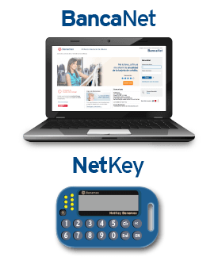
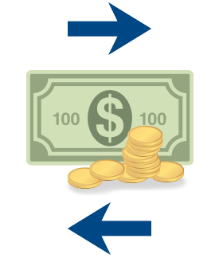

¿Cómo deposito en mi cuenta?
DONDE ESTES
Desde cualquier banco

Desde tu celular
SMS al 4040 Fondeo 700
SMS del 4040 Si deseas depositar $700 a tu cuenta transfer ingresa tu NIP
SMS del 4040 Transacción exitosa. Se depositaron $700 a tu cuenta Transfer No. de Autorización 12345678
Desde BancaNet


SMS del 4040 Transacción exitosa. Se depositaron $400 a tu cuenta Transfer No. de Autorización 12345678
DESDE CORRESPONSAL
Desde cualquier OXXO, Soriana, 7-Eleven y Sucursales Banamex.

SMS del 4040 Se depositaron $700 a tu cuenta Transfer No. de Autorización 12345678
Si eres Cliente Banamex puedes autofondear tu cuenta Transfer
Horarios para Transferencias Interbancarias
Recuerda que para realizar Transacciones Interbancarias desde tu Telcel, deberás considerar los siguientes horarios:
Lunes a Viernes de 5 am a 1 am y se aplicará de manera inmediata.
Sábados y Domingos de 5 am a 1 am y se aplicará de manera inmediata (incluye días festivos) .
Por disposición oficial no se permiten Transacciones Interbancarias fuera de los horarios mencionados anteriormente. Si lo intentas, recibirás un mensaje de texto indicando que: La transacción no pudo ser procesada.
Esperamos que esta información te sea útil, para dudas o aclaraciones llama al 01 800 444 2669 (Transfer Banamex) o marca al *4444 desde tu Telcel.
Consulta condiciones, comisiones y requisitos de contratación en www.banamex.com.